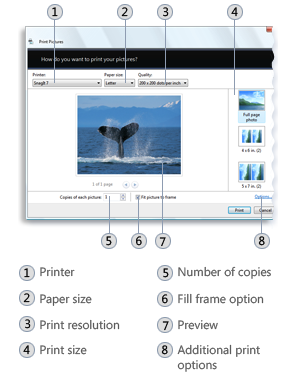
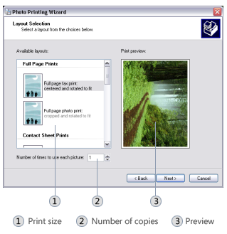

title: Photo Printing Wizard description: The Photo Printing Wizard helps users print photos by providing an easy-to-use wizard interface. ms.assetid: 9cc2c7d4-a2aa-4abc-9c63-b091e044804f keywords:
The Photo Printing Wizard helps users print photos by providing an easy-to-use wizard interface. The wizard enables the user to specify photo print sizes and other print options, and then sends the photos to the printer. The wizard is designed so that it can be invoked programmatically by any application that wants to offer users the ability to print photos and specify sizing and other print options. The Photo Printing Wizard is available on Windows XP and Windows Vista.
The Photo Printing Wizard offers several options that may not be available on common printer dialogs, such as multi-layout templates with accurate dimensions. The layout templates enable users to make the most efficient use of the space available on photographic printing paper. Other options that can be specified or accessed through the Photo Print Wizard include:
Any application can benefit from the features and photo printing capability offered by the Photo Printing Wizard. An application can pass in the files to be printed. The Photo Printing Wizard then takes care of preparing the file for printing based on the options specified by the user and sends the prepared files to the printer.
The following figure shows the Photo Printing Wizard interface on Windows Vista

The following figure shows the Photo Printing Wizard interface on Windows XP

On Windows XP, the Photo Print Wizard supports all graphics file formats that are supported by Windows GDI+. Currently, these file formats include:
For more information about graphics file formats supported by GDI+, see Types of Bitmaps.
On Windows Vista, the Photo Print Wizard supports any image file format for which a Windows Imaging Component (WIC) codec is installed. WIC provides several standard codecs, including:
For more information about WIC and WIC codecs, see Windows Imaging Component
To invoke the Photo Printing Wizard, call the IDropTarget interface with the following class identifier (CLSID):
static const CLSID CLSID_PrintPhotosDropTarget =
{0x60fd46de, 0xf830, 0x4894, {0xa6, 0x28, 0x6f, 0xa8, 0x1b, 0xc0, 0x19, 0x0d}};
The files to be processed by the Photo Printing Wizard are specified in an IDataObject object.
The following code example demonstrates how to invoke the Photo Printing Wizard.
static const CLSID CLSID_PrintPhotosDropTarget =
{0x60fd46de, 0xf830, 0x4894, {0xa6, 0x28, 0x6f, 0xa8, 0x1b, 0xc0, 0x19, 0x0d}};
// A data object that contains the list of photos to print.
IDataObject* pDataObject;
// Create the Photo Printing Wizard drop target.
CComPtr<IDropTarget> spDropTarget;
hr = CoCreateInstance(CLSID_PrintPhotosDropTarget,
NULL,
CLSCTX_INPROC_SERVER,
IID_PPV_ARGS(&spDropTarget));
// Drop the data object onto the drop target.
POINTL pt = {0};
DWORD dwEffect = DROPEFFECT_LINK | DROPEFFECT_MOVE | DROPEFFECT_COPY;
spDropTarget->DragEnter(pDataObject, MK_LBUTTON, pt, &dwEffect);
spDropTarget->Drop(pDataObject, MK_LBUTTON, pt, &dwEffect);}
Â
Â